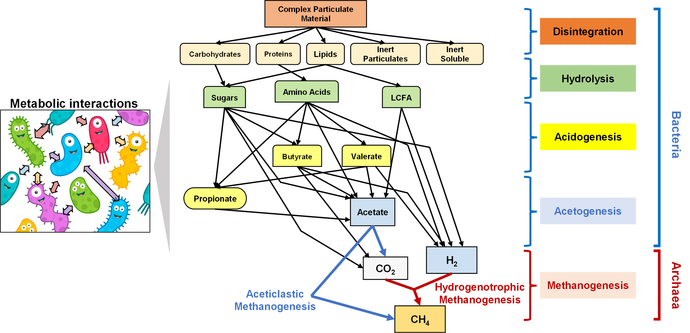
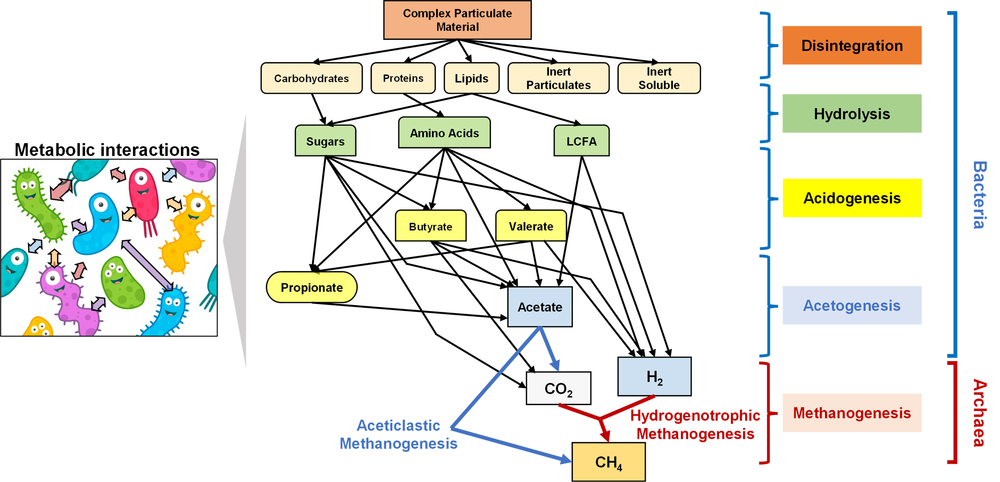

▶ 혐기소화 공정은 복잡한 구조의 유기물을 분해하여 최종적으로 메탄이라는 대사산물을 생정하는 자원순환 공정입니다.
▶ 혐기소화조로 유입된 잉여 유기물들은 다양한 종류의 미생물 간 대사 네트워크를 통해 아세트산과 같은 휘발성 유기산(Volatile Fetty Acids: VFAs) 및 수소/이산화탄소로 전환됩니다.
▶ 휘발성 유기산과 수소/이산화탄소는 2가지의 서로 다른 메탄생산 대사과정을 통해 최종적으로 메탄으로 전환됩니다.
▶ 다양한 형태의 혐기소화 공정을 대상으로 메탄생산 대사과정에 관여하는 미생물 군집 간 상호 네트워크 작용을 이해하고 메탄생산 대사과정을 극대화하기 위한 최적 운전 조건을 연구합니다.
 

▶ 유기물 대사 과정에서 발생하는 전자는 메탄생산 최종단계의 메탄가스를 생성하는 단계의 미생물들에게 전달되어 메탄 대사과정에 활용됩니다.
▶ 전도성 담체는 메탄생산 대사과정에서 관여하는 미생물 군집 간 대사 활성을 촉진하는 것으로 알려져 있습니다.
▶ 특히, 이종 미생물 간 전자전달 매커니즘(Direct Interspecies Electron Transfer mechanism)의 활성화를 통해, 전자전달 미생물exoelectrogen)으로부터 전자수용 미생물(endoelectrogen)에 직접 전자를 전달함으로써, 전통적인 전자운반체(electron shuttle)를 이용하는 방식에 비해 보다 효율적인 방식으로 알려져 있습니다.
▶ 이런 메탄생산 과정의 DIET 메커니즘에 대한 미생물생태학적 분석을 통해 베탄생산 대사과정을 극대화하기 위한 최적 DIET 메커니즘 활성화 조건 및 미생물 네트워크 관계를 규명하는 연구를 수행합니다.
▶ 머신러닝(Machine Learning)은 명시적으로 규칙을 프로그래밍하지 않고도, 데이터로부터 패턴과 관계를 학습하여 예측·분류·의사결정을 수행하는 알고리즘 및 방법론의 집합을 의미합니다.
▶ DIET 기반 메탄생선 과정에서 확보된 반응기 운전 데이터와 미생물 군집 및 기능성 유전체 거동 정보를 기반으로 기계학습을 수행, DIET 메커니즘을 통한 최적 메탄생산 조건을 도출하는 연구를 수행합니다.
▶ 이를 통해, 최적 메탄 생산을 위한 초기 미생물 군집 구성 조건 및 최정 메탄생산량을 예측할 수 있는 접근법을 연구합니다.